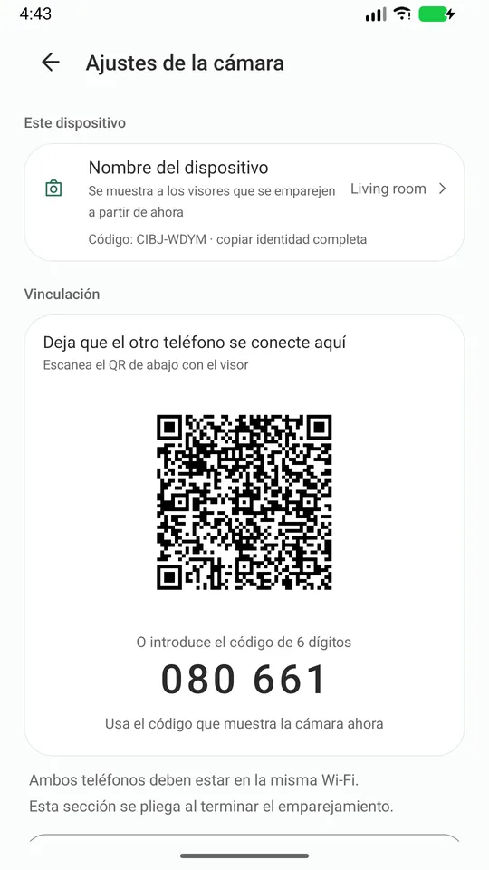
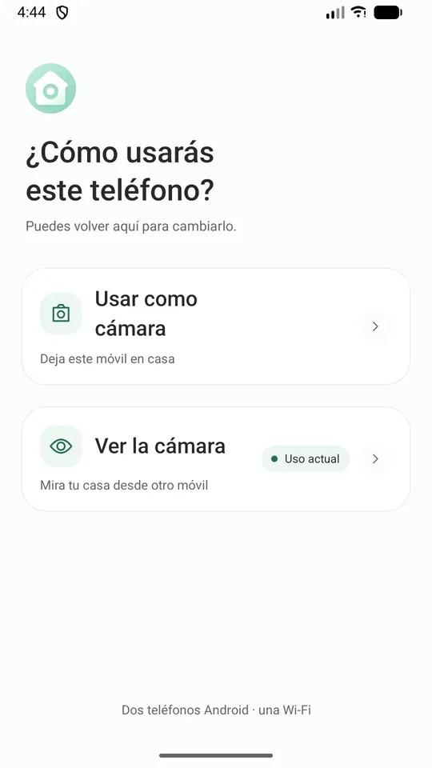
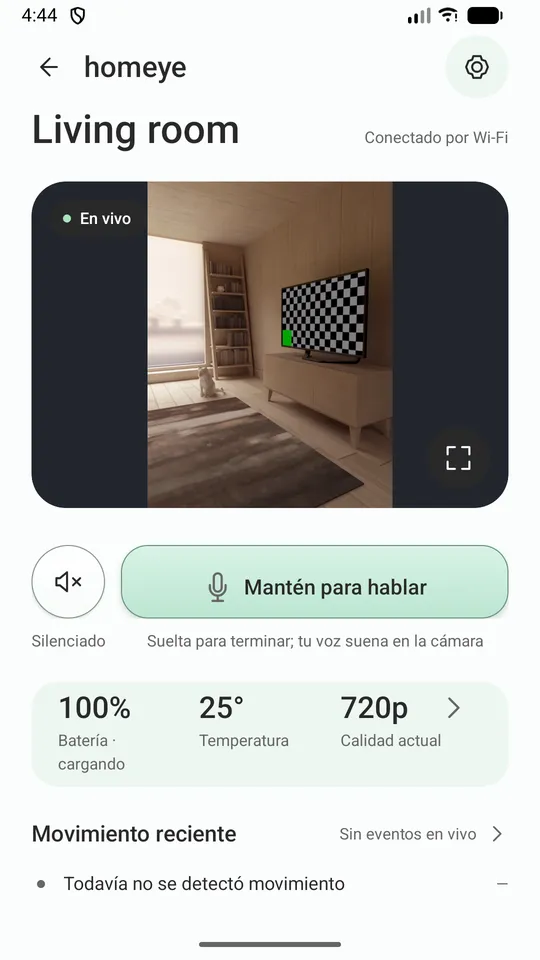
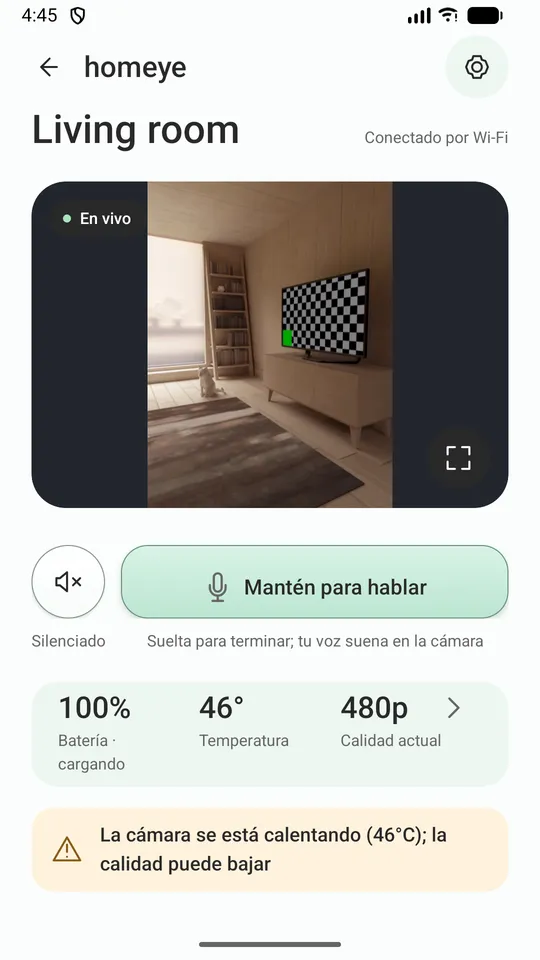
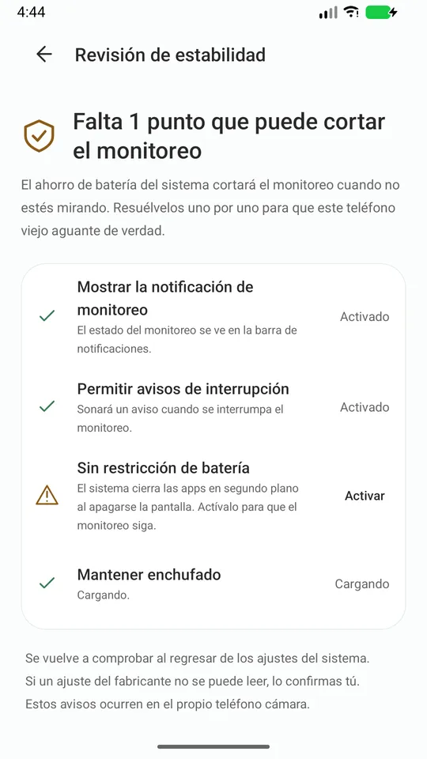
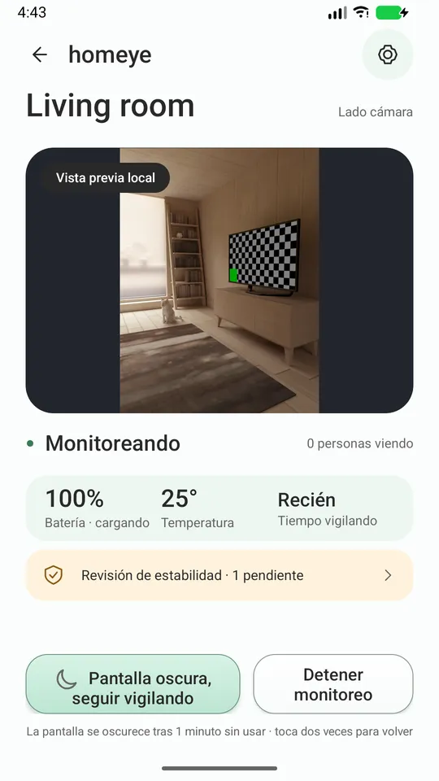

Ese móvil Android viejo del cajón es una cámara para casa.
Dos móviles, un Wi-Fi. Vídeo en directo, hablar por el altavoz y avisos de movimiento, sin cuenta, sin nube por medio y sin anuncios.
Ese móvil Android viejo del cajón se convierte en cámara en cuanto lo enchufas. Sin comprar hardware y sin crear cuenta.
No te engaña
Sabrás cuándo se cae
Sabrás cuándo se cae: no tienes que darte cuenta tú de que la imagen se congeló.
Dice por qué bajó la calidad
Cuando baja la calidad porque el teléfono está caliente o con poca batería, te dice por qué. Nunca se vuelve borroso a escondidas.
Te lleva a cada ajuste del sistema
Una "Revisión de estabilidad" lista los ajustes del sistema que matan apps en segundo plano y te lleva a cada uno.
El registro solo va donde tú lo envíes
Si algo falla, puedes exportar un registro de diagnóstico y enviárselo al desarrollador. El registro nunca se sube solo a ninguna parte.
Cómo funciona
- Instala Homeye en los dos teléfonos, en la misma Wi-Fi.
- En el viejo, elige "Usar como cámara". Enchúfalo y apúntalo.
- En el de diario, elige "Usar como visor" y escanea el código QR del teléfono viejo.
Se emparejan una vez; después basta con abrir la app.

Pantallas





Qué hace
- Imagen y sonido en vivo, con cuatro niveles de calidad que siguen la temperatura y la batería
- Pulsar para hablar
- Detección de movimiento, con aviso y miniatura en el visor
- El teléfono-cámara puede apagar la pantalla y seguir trabajando
- Avisos de batería baja y sobrecalentamiento desde la cámara
- Zoom desde el visor, hasta donde lleguen las lentes de ese teléfono
- 15 idiomas, según el ajuste del sistema
Lo que esta versión no puede hacer, dicho de frente
Solo funciona en la misma Wi-Fi Si estás fuera y con datos móviles, esta versión no conecta. El acceso remoto necesita servidores; se está evaluando y no está en esta entrega.
No puede prometer "nunca sin conexión" Android limita el trabajo en segundo plano para todos y nadie puede prometerlo. Lo que sí prometemos es que sabrás cuándo se detuvo.
No es un dispositivo médico y no sustituye la supervisión de un adulto.
Privacidad (cada línea la puedes verificar)
- La imagen y el sonido viajan solo dentro de la Wi-Fi en la que estás, nunca por nuestros servidores.
- No hace falta cuenta. No recopilamos tu correo ni tu teléfono.
- Sin publicidad y sin SDK de analítica.
- No tenemos servidor multimedia ni grabación en la nube.
- La identidad del dispositivo es un par de claves generado en el almacén de claves del móvil; la clave privada nunca sale de ahí.
- Para que el visor lo encuentre, el móvil-cámara anuncia en tu Wi-Fi su nombre y la huella de su clave pública, nada más.
Qué necesitas
Dos teléfonos Android (7.0 o posterior) en la misma Wi-Fi. Mantén enchufado el que hace de cámara.